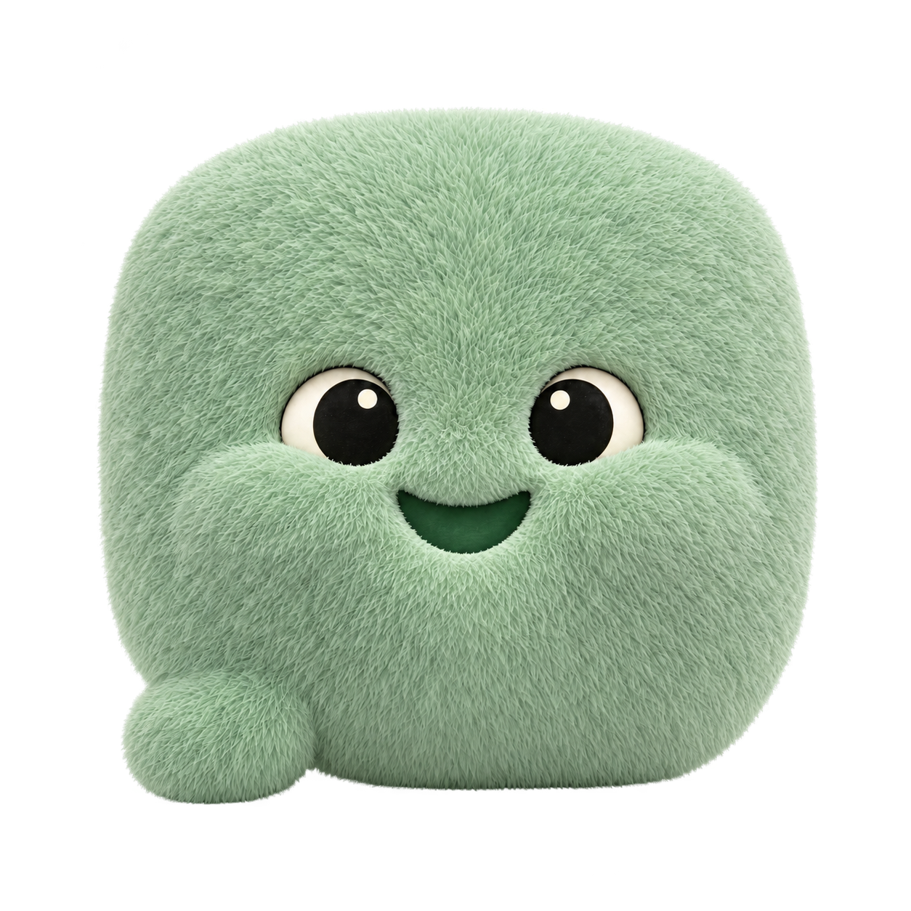

Character interaction
My Avatar by JcToon · Rive describes a hover reaction driven by a state machine, with a separate blink layer. That separation is useful for keeping attention, blinking and speaking from interfering with each other.
One mint pillow, with his padded cheeks and Ivory & Ink eyes. Try his movements, check him at small sizes, and place him over the Happy Paws film.
Warm, attentive and quietly delighted. Each movement happens once, then he settles.

Original mint · Ivory & InkChoose a movement to preview it here and on the film below.
Ready
These are working body-motion sketches using the portrait cutout. Eye blinks, mouth animation and three-dimensional turns still need a character rig. The facial expression stays fixed in this preview.
Actual image widths in pixels. White and near-black forest backgrounds expose lost detail and edge halos.
At 24–32px, judge the silhouette and eye contrast. Use 64px or larger when cheeks, mouth and accessories need to carry the expression. A simplified small icon can follow if the tiny sizes feel too soft.
Move through the footage and compare busy, light and dark backgrounds. The original film is unchanged.
Overlay and dialogue are a composition test, separate from the film's existing graphics. Size is capped on narrow screens. Select a movement above or here to replay it.
The references supply principles and interaction patterns. These particular movements and timings are designed for our pillow.
My Avatar by JcToon · Rive describes a hover reaction driven by a state machine, with a separate blink layer. That separation is useful for keeping attention, blinking and speaking from interfering with each other.
National Film Board · 12 principles explains anticipation, squash and stretch, easing and follow-through. Our hop compresses first, rises, then lands softly.
Rive Web repository provides the runtime and examples for interactive animations and state machines. It is a possible foundation for the later rigged version; this preview uses the original movement definitions linked below.
Rest → listen → acknowledge → rest. Use the attention hop only for a new prompt; use the happy double-bounce for a completed action. No repeated bouncing while someone is reading. Interrupt the current action before starting another.
Next rig layers: body deformation; cheek follow-through; eyes and independent blink; mouth shapes; removable accessories. Tool belts and aprons follow the body; the hardhat settles a beat later. Preserve the same body volume through a squash.
Download movement definitions ↓Download transparent mascot ↓Previous character-page snapshot →
{kind=link}